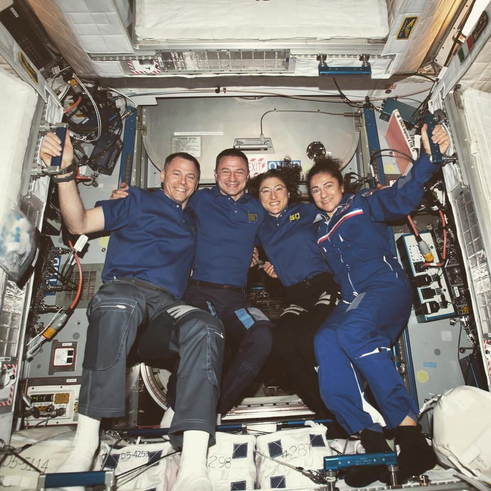
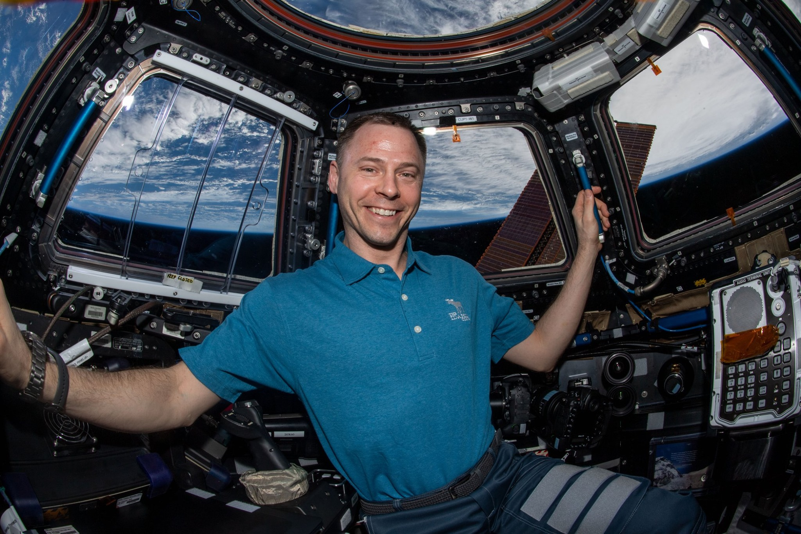

October 21st, 2020 13:39

You guys crushed it! Congrats on the #AllWomanSpacewalk...making history look like just another day at the office.
Although it's the 221st spacewalk performed in support of space station assembly, it's the first to be conducted entirely by women, NASA astronauts Jessica Meir and Christina Koch. It's the first spacewalk for Meir; she'll become the 15th woman overall and 14th U.S. woman to spacewalk. Spacewalk assignments are always made on the basis of which astronauts are best prepared to accomplish the tasks at hand under the conditions at the time. Spacewalks are not easy; astronauts typically describe them as the most physically challenging thing they do.
June 2nd, 2020 20:49

What an extraordinary journey! Part of what has made this experience so special was being here with my friends, classmates and our international partners. Thank you to all involved in the success of my mission on the International Space Station. I'm coming home!
It takes a lot of work to survive in space, something that no amount of training can fully make someone prepared for. I'm thankful to not have done it just once, but twice! I'm always ready and on call to do it again, if NASA ever needs me. Good luck to the next set of astronauts!
April 14th, 2020 11:23 [REDACTED]
When are we allowed to leave this planet?